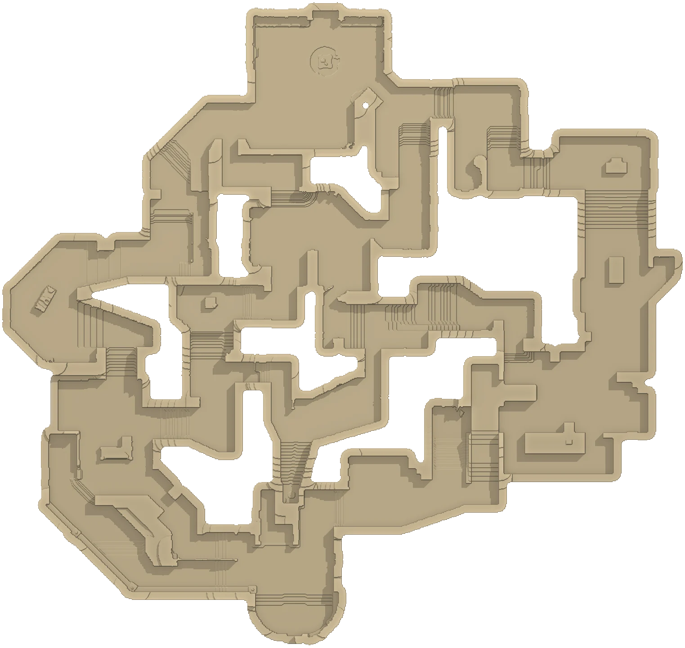

PEARL
Lisbon, Portugal
Every callout on your relief. Tap a marker for the name, the slang and a view from that spot, or test yourself.

Where is
About Pearl
- Release date
- June 22, 2022 – patch 5.0, Episode 5
- Setting
- Lisbon, Portugal – a city under the sea, inside a dome
- Layout
- Classic three lanes – A, Mid and B
- Special
- No gimmicks – no ropes, teleporters or doors
- Trivia
- Its code name in the game files is “Pitt”
All VALORANT maps
 AbyssJan Mayen, Norway23 callouts
AbyssJan Mayen, Norway23 callouts AscentVenice, Italy68 callouts
AscentVenice, Italy68 callouts BindRabat, Morocco28 callouts
BindRabat, Morocco28 callouts BreezeBermuda Triangle, Atlantic23 callouts
BreezeBermuda Triangle, Atlantic23 callouts FractureNew Mexico, USA22 callouts
FractureNew Mexico, USA22 callouts HavenThimphu, Bhutan29 callouts
HavenThimphu, Bhutan29 callouts IceboxBennett Island, Russia25 callouts
IceboxBennett Island, Russia25 callouts LotusWestern Ghats, India28 callouts
LotusWestern Ghats, India28 callouts PearlLisbon, Portugal26 callouts
PearlLisbon, Portugal26 callouts SplitTokyo, Japan24 callouts
SplitTokyo, Japan24 callouts SunsetLos Angeles, USA17 callouts
SunsetLos Angeles, USA17 callouts